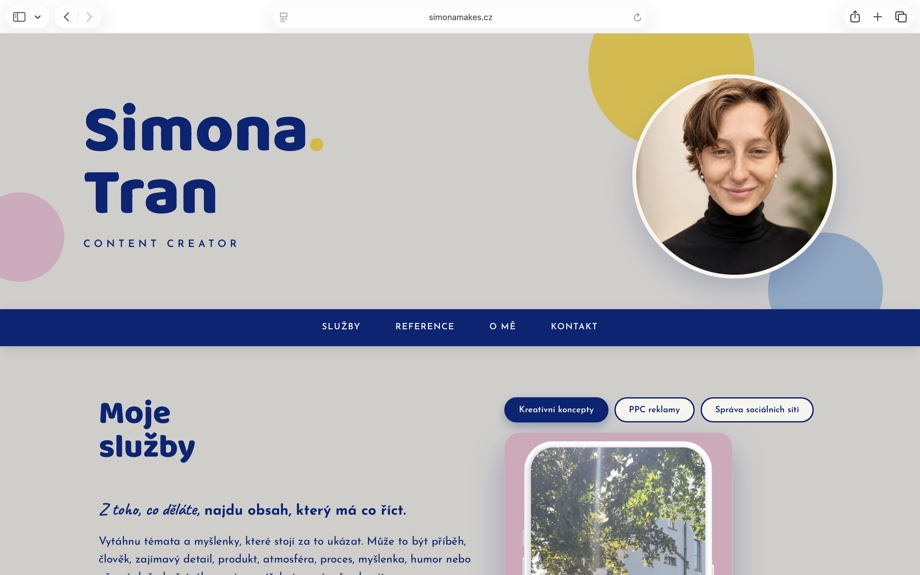
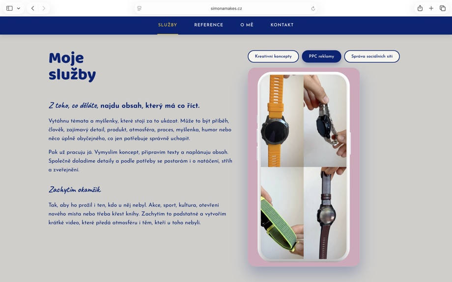
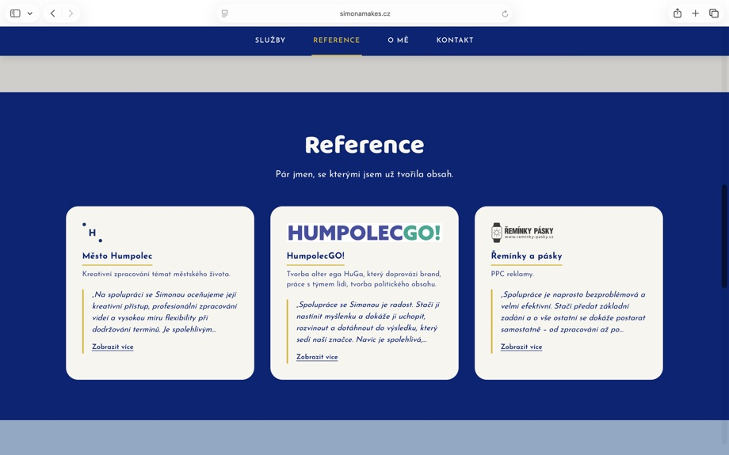
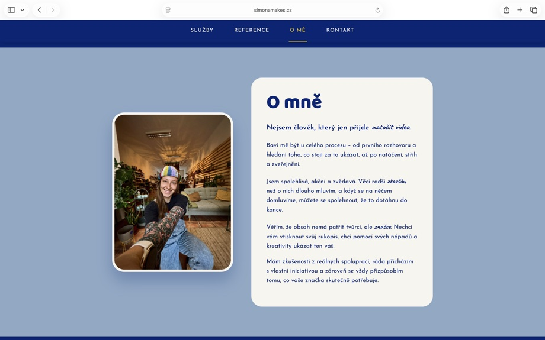
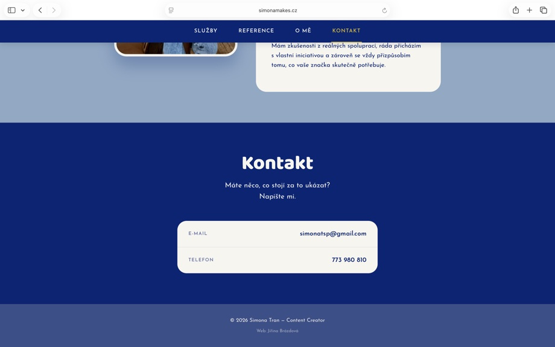

SimonaMakes.cz





Content creatorka Simona Tran potřebovala rychlý, jednoduchý web, který představí její služby, ukáže ukázky práce a dá klientům možnost se ozvat – bez zbytečné komplexity.
Klientka měla jasnou představu o barevné paletě a chtěla web, který bude hotový rychle a bude především přehledný.
Hlavní náplní její práce je tvorba a natáčení videí, takže bylo důležité, aby ukázky videí byly na webu hned vidět a dobře vynikly.
Web dnes slouží jako jednoduchá vizitka – klienti si přečtou, co Simona nabízí, podívají se na video ukázky a reference, a napíšou jí přímo přes kontaktní údaje na stránce.
Doménu i hosting pro ni dál spravuju.
→ Navštívit simonamakes.cz